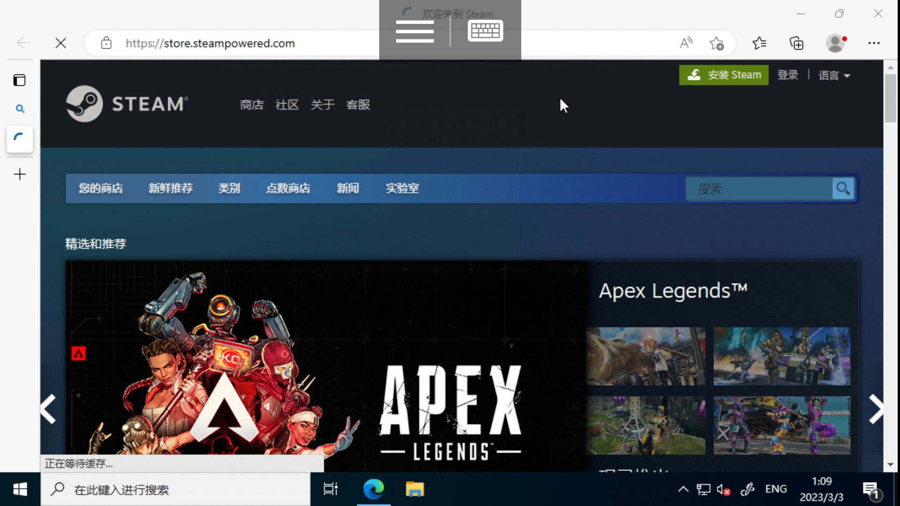

第一节：安装
注意：蒸汽平台为中国特供版，有关信息请参见此
注册steam的第一步当然是去获取安装包
一般而言，安装包都可以访问steam官网下载地址来进行注册并下载。
但是steam因为未知原因时常连接不稳定，当以上链接无法打开时，可以点击下载或在网络上自行查找下载站文件下载。
也可以从搜索引擎（如百度、bing等）获取，但是千万小心假冒steam
上图中的链接后均有广告标识，是假冒steam
这里推荐bing搜索的国际版。第一张图是百度搜索，其中第二个网址为store.steampowered.com/的为官网。第二张图为bing国际版，第一个结果就为官网(国际版入口在搜索栏上方)现在我们点击steam网站
tip：页首的图片就是steam官网链接
注意：某些网络下steam无法打开，提示超时，详见此。
进入steam下载页面，点击下载steam，打开程序
按部就班继续

启动steam
等待更新(注意运行steam++或加速器。)
更新完毕
恭喜，你现在已经迈出了第一步，安装steam。